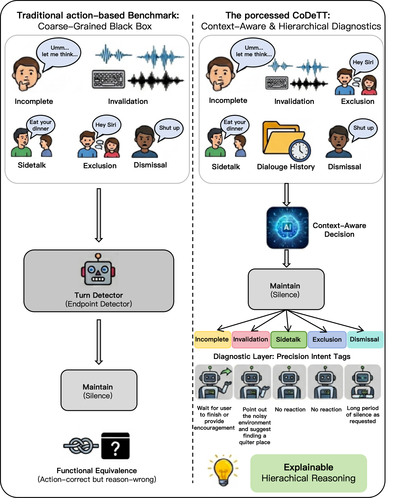
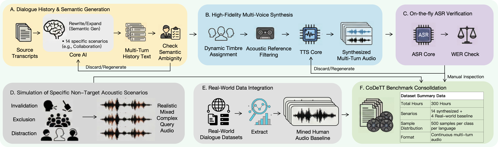

Overview Overview
Turn-taking 是语音对话系统中的核心能力，但现有评测大多仍停留在句尾检测或粗粒度动作判断，难以衡量模型是否真正理解了当前交互意图。 CoDeTT 将 turn-taking 重新定义为一个结合对话上下文与系统状态的决策问题，提供统一、可诊断的 benchmark，用于系统评估模型在复杂对话场景下的轮次决策能力。
与传统方法不同，CoDeTT 不仅关注系统“是否该说话”，还关注模型是否正确理解了为什么应该这样决策。我们将任务统一建模为 4 类动作预测：Maintain、Stop & Listen、Takeover、Dismiss，并进一步细化为 14 类语义场景，以支持更细粒度的诊断分析。
Turn-taking is a core capability of spoken dialogue systems, yet most existing evaluations are still limited to endpoint detection or coarse action prediction. These settings make it difficult to assess whether a model truly understands the communicative intent behind each conversational decision.
CoDeTT reformulates turn-taking as a structured decision problem conditioned on dialogue context and system state. Instead of only evaluating whether a system should speak, it also measures whether the model understands why that decision should be made. The benchmark is organized around four core actions—Maintain, Stop & Listen, Takeover, and Dismiss—and further decomposed into 14 fine-grained semantic scenarios for diagnostic analysis.
Why CoDeTT? Why CoDeTT?
现有 benchmark 往往只能观察模型的表面行为，却难以解释模型失败或成功的真正原因。例如，同样是“保持沉默”，可能来自于正确识别用户停顿，也可能只是把当前输入误判成背景噪声或 side-talk。CoDeTT 希望解决的，正是这种动作正确但语义理解错误的问题。
Existing benchmarks often focus on surface behavior but provide little insight into why a model succeeds or fails. For example, the same silent action may result from correctly recognizing a user hesitation, or from incorrectly treating the input as background noise or side-talk. CoDeTT is designed to expose this gap between action correctness and semantic understanding.

Benchmark Highlights Benchmark Highlights
4 类核心动作 4 Core Actions
统一不同模型范式下的 turn-taking 评测空间，支持更公平的模型比较。
A unified action space for evaluating heterogeneous turn-taking systems under the same protocol.
14 类细粒度场景 14 Fine-grained Scenarios
覆盖 interruption、backchannel、incomplete、exclusion、side-talk 等复杂交互条件。
Covers complex interaction conditions such as interruption, backchannel, incomplete, exclusion, and side-talk.
300+ 小时中英双语数据 300+ Hours of Bilingual Data
包含 18,000 个标注实例，支持多轮上下文建模与系统化评测。
Includes 18,000 annotated instances in Chinese and English for context-aware multi-turn evaluation.
SMR 指标 SMR Metric
用于衡量模型是否出现 “action-correct but reason-wrong” 的语义错配现象。
Measures semantic misalignment when a model chooses the correct action for the wrong reason.
层次化分类体系 Hierarchical Taxonomy
| System state | Decision strategy | Scenario | Number of Samples | Operational cue (summary) |
|---|---|---|---|---|
| SystemSpeaking | Maintain | Backchannel | 1,000(real) + 1,000(syn) | User produces short non-floor-taking feedback (e.g., “uh-huh”). |
| Invalidation | 1,000(syn) | Non-speech events (cough, impact, background noise bursts). | ||
| Side-talk | 1,000(syn) | Primary user speaks to another person. | ||
| Distraction | 1,000(syn) | Background speech unrelated to dialogue topic. | ||
| Stop & Listen | Interruption | 1,000(real) + 1,000(syn) | User intends to cut in. | |
| Dismissal | 1,000(syn) | Explicit “stop talking” command directed to system. | ||
| Collaboration | 1,000(syn) | Relevant third party interjects. | ||
| SystemIdle | Takeover | Completion | 1,000(real) + 1,000(syn) | User intent is complete. |
| Cooperation | 1,000(syn) | Third party utterance is interaction-relevant. | ||
| Dismiss | Incomplete | 1,000(real) + 1,000(syn) | Hesitation/thinking pause. | |
| Invalidation | 1,000(syn) | Non-speech events (cough, impact, background noise bursts). | ||
| Dismissal | 1,000(syn) | “do not respond / be quiet” instruction. | ||
| Exclusion | 1,000(syn) | Non-target speaker or not addressing the system. | ||
| Side-talk | 1,000(syn) | Primary user speaks to another person. |
Dataset Dataset
CoDeTT 包含超过 300 小时 的中英双语多轮对话数据，共 18,000 个标注样本，覆盖 14 个细粒度 turn-taking 场景。每个样本都包含完整的多轮历史上下文和目标 query，用于评估模型的上下文感知决策能力。
CoDeTT contains over 300 hours of bilingual multi-turn conversational data with 18,000 annotated instances, covering 14 fine-grained turn-taking scenarios. Each sample includes dialogue history and a target query, enabling evaluation of context-aware decision making.

下载链接 Download Links
CoDeTT 数据集提供 Hugging Face 与 ModelScope 两个下载入口，方便不同地区用户访问。
CoDeTT is available on both Hugging Face and ModelScope for easier access across regions.
Evaluation Evaluation
CoDeTT 采用两阶段评测协议：
- Action Level：评测模型在 4 类核心动作上的功能正确性。
- Intent Level：评测模型在 14 类细粒度语义场景上的理解能力。
在此基础上，论文进一步提出 Semantic Misalignment Rate (SMR)，用于揭示模型虽然做对了动作，但其决策依据并不符合真实交互意图的情况。
CoDeTT adopts a two-stage evaluation protocol:
- Action Level: evaluates whether a model predicts the correct one among the 4 core actions.
- Intent Level: evaluates whether a model understands the 14 fine-grained semantic decision scenarios.
In addition, CoDeTT introduces Semantic Misalignment Rate (SMR) to reveal cases where a model produces the correct action while relying on incorrect semantic reasoning.


Main Findings Main Findings
实验表明，现有模型在 turn-taking 上仍存在明显局限。传统 controller 更擅长边界检测，但难以处理复杂语义场景；更强的 Omni-SLM 虽然整体动作更平衡，但在细粒度意图理解和多说话人角色区分上依然存在显著不足。结果说明，仅看 action accuracy 仍不足以全面评估 turn-taking 能力。
Experimental results reveal clear limitations in current turn-taking systems. Traditional controllers are strong at boundary detection but struggle in more complex semantic conditions. More capable Omni-SLMs achieve more balanced action behavior, yet still show substantial weaknesses in fine-grained intent understanding and multi-party speaker-role discrimination. These findings suggest that action accuracy alone is not sufficient for evaluating turn-taking ability.
Conclusion Conclusion
CoDeTT 将 turn-taking evaluation 从简单的时序判断问题，提升为 可解释、可诊断的决策评测问题。通过细粒度场景设计与 SMR 指标，CoDeTT 为下一代上下文感知语音对话系统提供了更严格、更有洞察力的评测框架。
CoDeTT reframes turn-taking evaluation from a simple timing task into an interpretable and diagnostic decision benchmark. By combining fine-grained scenario design with the SMR metric, CoDeTT provides a more rigorous framework for evaluating the next generation of context-aware spoken dialogue systems.
BibTeX
@misc{shen2026codettcontextawaredecisionbenchmark,
title={CoDeTT: A Context-Aware Decision Benchmark for Turn-Taking Evaluation},
author={Huan Shen and Yingao Wang and Shangkun Huang and Wei Zou and Yunzhang Chen},
year={2026},
eprint={2603.25434},
archivePrefix={arXiv},
primaryClass={cs.SD},
url={https://arxiv.org/abs/2603.25434},
}